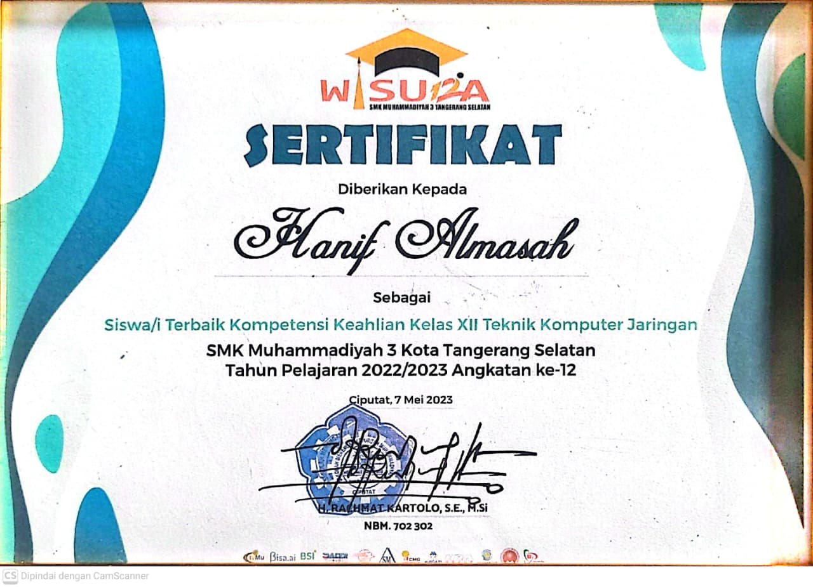
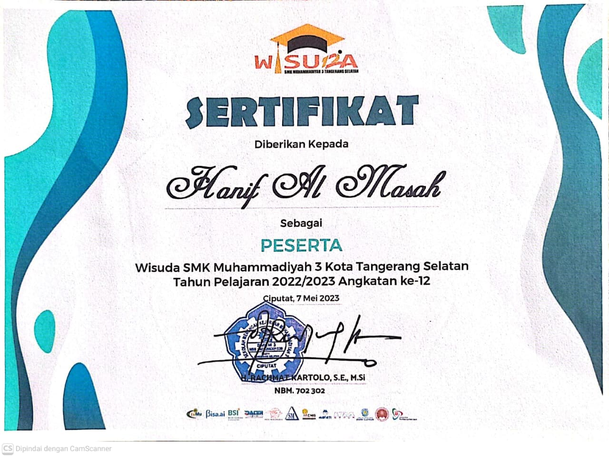
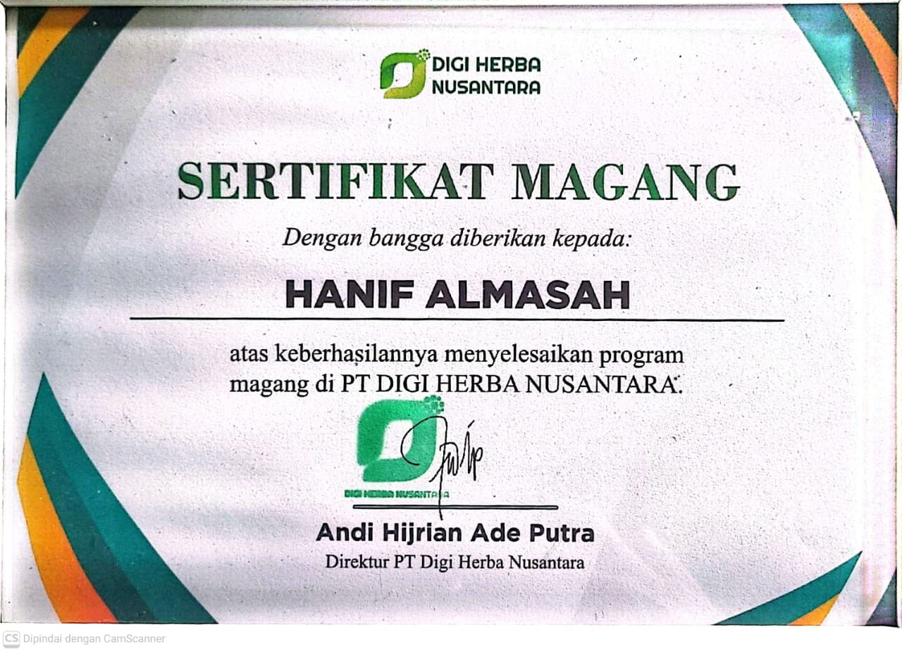
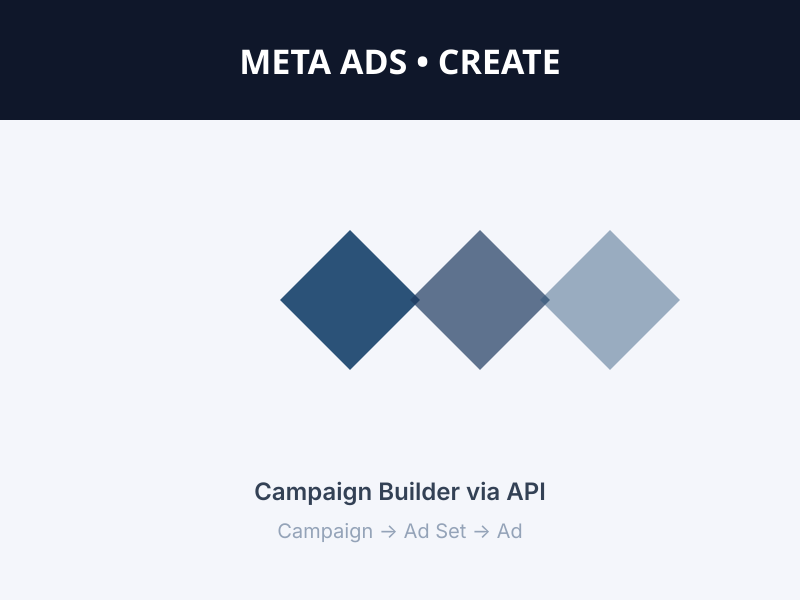
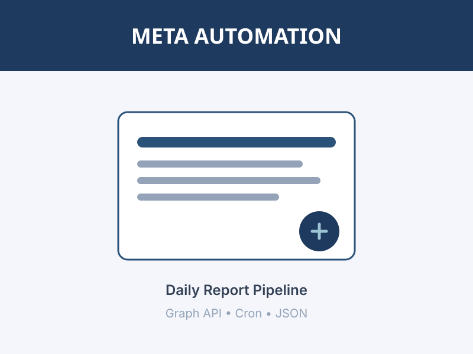
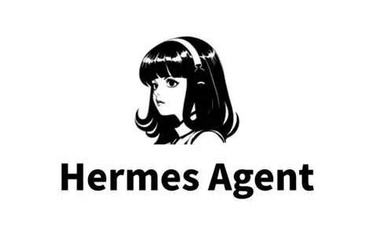
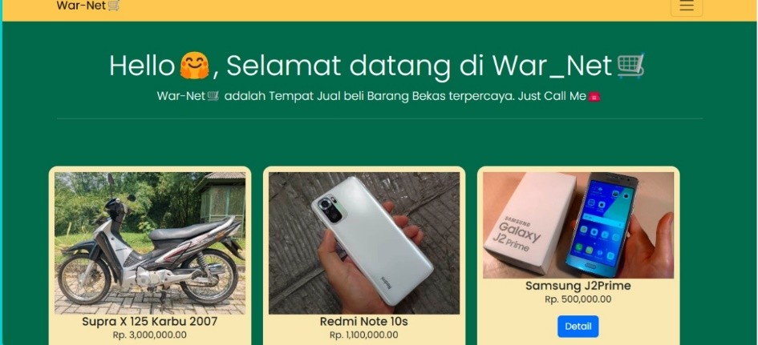
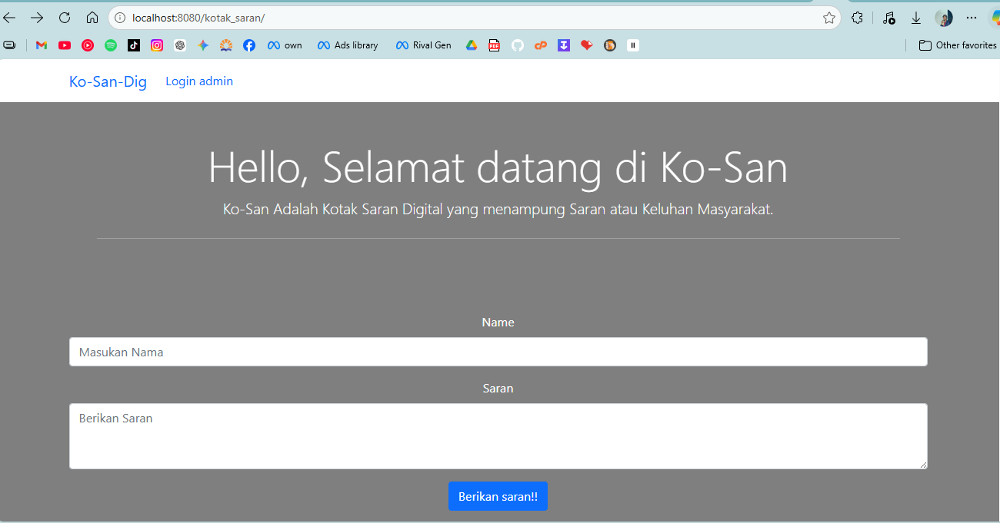
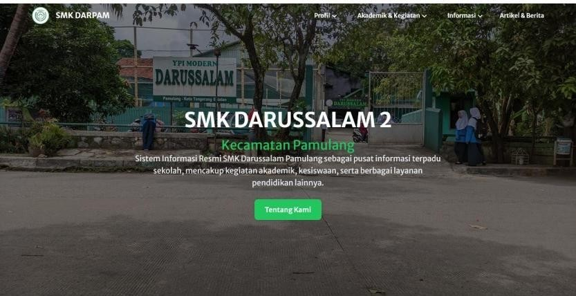

Script Writing
Menyusun skrip Reels/TikTok end-to-end — riset tren, tentukan angle, tulis narasi, dan hook 3 detik pertama.
Digital Marketing · IT Support
Merancang strategi kampanye berbasis data, mengelola kreatif iklan, dan menjembatani dunia marketing dengan fondasi teknis yang solid.

Lulusan TKJ dengan predikat Siswa Terbaik yang kini berkarir di Digital Marketing. Dua tahun terakhir saya habiskan untuk merancang strategi konten berbasis data, mengelola visual kreatif, dan menjalankan Campaign Meta Ads dengan budget ratusan juta rupiah. Latar belakang teknis dari TKJ membantu saya troubleshoot hal yang biasanya jadi bottleneck di tim kreatif.
Menyusun skrip Reels/TikTok end-to-end — riset tren, tentukan angle, tulis narasi, dan hook 3 detik pertama.
Editing Reels via CapCut: potong, susun alur, teks/subtitle animasi, sound design hingga format 9:16 optimal.
Merancang konten edukatif multi-slide di Canva dengan layout, tipografi, dan palet warna konsisten brand.
Kumpulan poster & video kreatif yang sudah saya produksi.
Membangun & mengelola server mandiri dengan Debian untuk Web, DHCP, DNS, dan FTP.
Merancang instalasi jaringan & manajemen bandwidth dengan perangkat Mikrotik.
Pengembangan web dengan HTML, CSS, JavaScript, dan PHP — dari tampilan hingga logika.
Mendiagnosis & menyelesaikan masalah teknis sistem & jaringan: laptop, printer, router.

Siswa Terbaik TKJ
Peringkat 3 TKJ
Magang PT DigiHerba
Tool yang membuat kampanye, ad set, dan kreatif Meta Ads langsung via Graph API dengan parameter terstruktur.
Launching kampanye jadi hitungan menit, bukan setup manual berulang di Ads Manager.

Pipeline otomasi yang menarik insight Meta Ads (ROAS, CPA, CPL, AddToCart) dan menyusun laporan harian berformat standar.
Tim melihat performa iklan real-time tanpa buka Ads Manager — keptusan scale/kill cepat.
github.com/Hanif-almasah/portofolio2 →
AI agent personal (Chief of Staff) yang mengorkestrasi konteks lintas domain: marketing, coding, dan operasional harian.
Satu assistant yang paham konteks kerjaan — eksekusi harian & riset jauh lebih cepat.

Platform web untuk menampilkan dan mengelola inventaris barang bekas (warnet/usaha kecil) secara terstruktur.
Pemilik usaha bisa melacak stok barang bekas tanpa pencatatan manual — efisien & rapi.
github.com/Hanif-almasah/war_net →
Aplikasi kotak saran digital yang memudahkan warga menyampaikan aspirasi secara anonim dan terstruktur.
Perangkat desa mendapat umpan balik warga terpusat — aspirasi terekam & terukur.
github.com/Hanif-almasah →
Situs profil sekolah berbasis Laravel yang menyajikan informasi kegiatan, fasilitas, dan PPDB secara terstruktur.
Sekolah punya tautan informasi resmi yang rapi untuk calon siswa & orang tua.
github.com/Hanif-almasah →